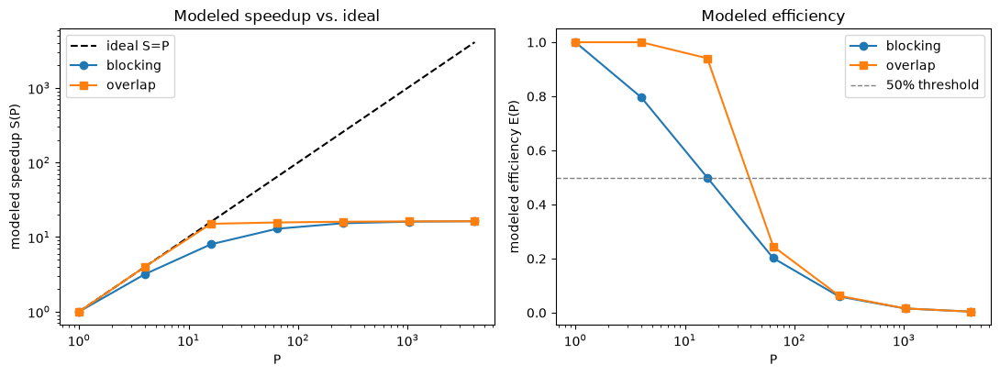
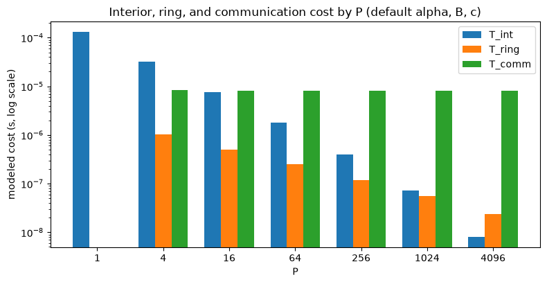

Implement halo scheduling and model scaling at fixed global size.
parallel algorithms
HPC
Published
October 15, 2026
Halo Exchange and Communication Overlap
Learning goal: Implement correct periodic halo exchange for a decomposed 2D stencil, separate interior and boundary work, and quantify modeled strong-scaling limits with and without communication overlap.
Time: 60-90 minutes. Dependencies: NumPy, Matplotlib, and Plotly. Synthetic, dimensionless data. The core runs in one Python kernel using emulated ranks; no MPI installation is required. Emulation timings are not parallel performance measurements. Optional MPI work is separate.
The reusable skill is ownership and scheduling: what data each rank owns, what it must receive, and which work can run before those receives complete. The physical grid stays fixed.
1. Governing model and reference solution
Use one explicit step of periodic 2D diffusion on the unit square: \[u_t=\kappa(u_{xx}+u_{yy}),\quad
u^{n+1}_{i,j}=u^n_{i,j}+\mu\left(u^n_{i-1,j}+u^n_{i+1,j}+u^n_{i,j-1}+u^n_{i,j+1}-4u^n_{i,j}\right),\] with diffusivity \(\kappa=0.01\ \mathrm{m^2/s}\) (dimensionless unit square), grid spacing \(\Delta x=1/N\ \mathrm{m}\), time step \(\Delta t=\mu\Delta x^2/\kappa\ \mathrm{s}\), and dimensionless diffusion number \(\mu=0.2\). Set \(N=256\) in both directions and advance \(\mathrm{STEPS}=20\) steps. Cell centers are \(x_i=(i+\tfrac12)\Delta x\), \(y_j=(j+\tfrac12)\Delta x\). Initial state: \[u(x,y)=1+0.2\sin(2\pi x)\cos(4\pi y)\quad[\text{dimensionless}].\]
The serial reference uses np.roll for periodic wraparound in both directions. It establishes the ground truth that the decomposed, halo-exchanged implementation (Section 2) must reproduce exactly: the decomposition changes only how work is scheduled and where data lives, not the numerical operator. This is an exactness check on a parallel algorithm, not a discretization-accuracy study (that is Section 3’s distinction).
dx=0.003906 m, dt=3.051758e-04 s, mu=0.2, initial mean=1.000000
serial reference: step 1 max=1.199804, step 20 max=1.197530
2. Discretization and conditions
Cartesian ownership and halo buffers
Use \(P \in \{1,4,16,64\}\) ranks arranged on square processor grids \((1,1)\), \((2,2)\), \((4,4)\), \((8,8)\). Rank \((r,c)\) owns a contiguous \(n \times n\) block, \(n=N/\sqrt{P}\), stored with one ghost layer around the owned interior (padded shape \((n+2)\times(n+2)\)).
split_global carves the global array into owned blocks with zeroed ghosts. gather_global is its exact inverse on the owned interiors. exchange_halos snapshots the four owned faces required by the five-point stencil (corners are unused) from every block before writing any ghost cell, then installs each block’s four ghost rows/columns from the matching neighbor’s snapshot. Periodic neighbors wrap in both processor-grid directions via % d, which also covers \(P=1\) (a rank is its own neighbor in all four directions) and the \(P=4\) case where two directions can share the same physical neighbor.
Correctness is verified against global index IDs (np.arange(N*N)), not a smooth wave, so a halo swapped between the wrong pair of neighbors cannot hide behind symmetric data: every received ghost value must equal the corresponding periodic global index exactly (Section 6).
Code
def split_global(u, dims):"""Split a global (N, N) array into {(r, c): padded (n+2, n+2) block} with one ghost layer.""" d, _ = dims n = u.shape[0] // d blocks = {}for r inrange(d):for c inrange(d): blk = np.zeros((n +2, n +2), dtype=u.dtype) blk[1:-1, 1:-1] = u[r * n:(r +1) * n, c * n:(c +1) * n] blocks[(r, c)] = blkreturn blocksdef gather_global(blocks, dims):"""Inverse of split_global: reassemble owned interiors into one (N, N) array.""" d, _ = dims n =next(iter(blocks.values())).shape[0] -2 out = np.empty((n * d, n * d), dtype=next(iter(blocks.values())).dtype)for (r, c), blk in blocks.items(): out[r * n:(r +1) * n, c * n:(c +1) * n] = blk[1:-1, 1:-1]return outdef _snapshot_faces(blocks):"""Snapshot the four owned send-faces of every block before any ghost is written.""" faces = {}for key, blk in blocks.items(): faces[key] = {"N": blk[1, 1:-1].copy(),"S": blk[-2, 1:-1].copy(),"W": blk[1:-1, 1].copy(),"E": blk[1:-1, -2].copy(), }return facesdef exchange_halos(blocks, dims):"""Snapshot all send faces, then install every received ghost from those snapshots (in place).""" d, _ = dims faces = _snapshot_faces(blocks)for (r, c), blk in blocks.items(): blk[0, 1:-1] = faces[((r -1) % d, c)]["S"] blk[-1, 1:-1] = faces[((r +1) % d, c)]["N"] blk[1:-1, 0] = faces[(r, (c -1) % d)]["E"] blk[1:-1, -1] = faces[(r, (c +1) % d)]["W"]return blocksdef halo_matches_global_id(dims):"""Check every received ghost face against the corresponding periodic global index.""" d, _ = dims N_local =256 ids = np.arange(N_local * N_local, dtype=float).reshape(N_local, N_local) blocks = split_global(ids, dims) exchange_halos(blocks, dims) n = N_local // dfor (r, c), blk in blocks.items(): cols = np.arange(c * n, c * n + n) % N_local rows = np.arange(r * n, r * n + n) % N_localifnot np.array_equal(blk[0, 1:-1], ids[(r * n -1) % N_local, cols]):returnFalseifnot np.array_equal(blk[-1, 1:-1], ids[(r * n + n) % N_local, cols]):returnFalseifnot np.array_equal(blk[1:-1, 0], ids[rows, (c * n -1) % N_local]):returnFalseifnot np.array_equal(blk[1:-1, -1], ids[rows, (c * n + n) % N_local]):returnFalsereturnTrueDECOMPOSITIONS = [(1, (1, 1)), (4, (2, 2)), (16, (4, 4)), (64, (8, 8))]for P, dims in DECOMPOSITIONS:print(f"P={P:<3d} dims={dims} halo-matches-global-id: {halo_matches_global_id(dims)}")
Two schedules, each writing every owned cell exactly once per step using distinct old/new buffers (no in-place aliasing):
Blocking: exchange all old-state faces first, then update every owned cell from the now-complete padded block.
Overlap emulation: snapshot send faces; compute the strict interior (\((n-2)^2\) cells) from old data alone (it needs no ghost values); install the received faces; compute the remaining boundary ring (\(n^2-(n-2)^2\) cells); swap buffers.
This ordering emulates a legal MPI overlap schedule (interior work that does not depend on the halo runs before the receives are required) but does not implement concurrent communication in this single Python kernel — see Section 7 for why nonblocking calls alone do not establish that.
Code
def _update_full(blk, mu=MU):"""Five-point stencil update for every owned cell of a padded block (ghosts must be current)."""return blk[1:-1, 1:-1] + mu * ( blk[0:-2, 1:-1] + blk[2:, 1:-1] + blk[1:-1, 0:-2] + blk[1:-1, 2:] -4* blk[1:-1, 1:-1] )def decomposed_step(blocks, dims, schedule, mu=MU, track_writes=False):"""Advance one step with 'blocking' or 'overlap' scheduling using distinct old/new buffers.""" d, _ = dims n =next(iter(blocks.values())).shape[0] -2 write_count = {key: np.zeros((n, n), dtype=int) for key in blocks} if track_writes elseNoneif schedule =="blocking": exchange_halos(blocks, dims) new_blocks = {}for key, blk in blocks.items(): nb = np.zeros_like(blk) nb[1:-1, 1:-1] = _update_full(blk, mu) new_blocks[key] = nbif track_writes: write_count[key] +=1return new_blocks, write_countif schedule =="overlap": faces = _snapshot_faces(blocks) new_blocks = {key: np.zeros_like(blk) for key, blk in blocks.items()} ring_mask = np.ones((n, n), dtype=bool)if n >2: ring_mask[1:-1, 1:-1] =Falsefor key, blk in blocks.items(): interior = blk[1:-1, 1:-1]if n >2: core = interior[1:-1, 1:-1] + mu * ( interior[0:-2, 1:-1] + interior[2:, 1:-1]+ interior[1:-1, 0:-2] + interior[1:-1, 2:] -4* interior[1:-1, 1:-1] ) new_blocks[key][2:-2, 2:-2] = coreif track_writes: write_count[key][1:-1, 1:-1] +=1for (r, c), blk in blocks.items(): blk[0, 1:-1] = faces[((r -1) % d, c)]["S"] blk[-1, 1:-1] = faces[((r +1) % d, c)]["N"] blk[1:-1, 0] = faces[(r, (c -1) % d)]["E"] blk[1:-1, -1] = faces[(r, (c +1) % d)]["W"]for key, blk in blocks.items(): full_new = _update_full(blk, mu) new_blocks[key][1:-1, 1:-1][ring_mask] = full_new[ring_mask]if track_writes: write_count[key][ring_mask] +=1return new_blocks, write_countraiseValueError(f"unknown schedule {schedule!r}")SCHEDULES = ("blocking", "overlap")print("decomposed_step defined for schedules:", SCHEDULES)
decomposed_step defined for schedules: ('blocking', 'overlap')
3. Error measures and expected behavior
The error measure is the maximum absolute difference between a gathered decomposed field and the serial reference at the same step, \[e(P,\text{schedule},\text{step})=\max_{i,j}\left|u^{\text{decomposed}}_{i,j}-u^{\text{serial}}_{i,j}\right|,\] evaluated after step 1 and step 20 for every \(P\in\{1,4,16,64\}\) and both schedules.
Expected behavior: because the decomposition and halo exchange reproduce the identical periodic five-point stencil with no approximation, \(e\) should sit at floating-point round-off (\(\lesssim 10^{-12}\), the accumulated error of ~\(10^2\)–\(10^4\) floating-point operations per cell over 20 steps) for every \(P\) and schedule — it should not shrink with finer decomposition or grow with step count beyond that round-off floor. A larger \(e\) would indicate a genuine decomposition bug (e.g., a swapped neighbor or a double-written cell), not a discretization-accuracy issue; there is no mesh or time-step refinement in this notebook (see Section 6 note).
Code
comparisons = {}for P, dims in DECOMPOSITIONS:for schedule in SCHEDULES: blocks = split_global(u0, dims)for step inrange(1, STEPS +1): blocks, _ = decomposed_step(blocks, dims, schedule)if step in (1, STEPS): gathered = gather_global(blocks, dims) err =float(np.max(np.abs(gathered - serial_history[step]))) comparisons[(P, schedule, step)] = errfor (P, schedule, step), err in comparisons.items():print(f"P={P:<3d}{schedule:<9s} step={step:<2d} max|diff|={err:.3e}")assertall(err <1e-12for err in comparisons.values()), "decomposition error exceeds round-off floor"print("\nAll decomposition errors are at the round-off floor (<1e-12), as expected.")
Section 3 already shows: for every \(P\) and both schedules, the decomposed solution matches the serial reference to round-off after both 1 and 20 steps. This is the “convergence” result for the parallel algorithm itself — exactness independent of \(P\), not an order-of-accuracy trend.
Communication and scaling model
Hypothetical hardware parameters: per-message latency \(\alpha=2\ \mu\mathrm{s}\), payload bandwidth \(B=10\ \mathrm{GB/s}\), stencil cost \(c=2\ \mathrm{ns}\) per owned cell, float64 payload \(b=8\ \mathrm{bytes}\). Four face messages are assumed serialized through one rank’s communication path: \[T_{comm}=4\alpha+\frac{4nb}{B},\qquad T_{int}=c(n-2)^2,\qquad T_{ring}=c\left[n^2-(n-2)^2\right].\] For \(P>1\): \[T_{block}=T_{int}+T_{ring}+T_{comm},\qquad T_{overlap}=T_{ring}+\max(T_{int},T_{comm}).\] For \(P=1\), bypass messaging: \(T_1=cN^2\) for both schedules (serial reference time at fixed global size). Speedup \(S(P)=T_1/T(P)\), efficiency \(E=S/P\), hidden fraction \(\min(T_{int},T_{comm})/T_{comm}\). These are idealized lower-bound models: perfect independent progress, no packing, synchronization, contention, or load imbalance — not a performance prediction for real hardware.
Code
def scaling_model(P, alpha=2e-6, bandwidth=10e9, cost=2e-9, N=N, b=BYTES_PER_FLOAT):"""Idealized rank-local costs, ideal overlap, speedup, and efficiency at fixed global size N.""" T1 = cost * N**2if P ==1:returndict(P=P, n=float(N), T_int=T1, T_ring=0.0, T_comm=0.0, T_block=T1, T_overlap=T1, S_block=1.0, S_overlap=1.0, E_block=1.0, E_overlap=1.0, hidden_fraction=0.0) n = N / np.sqrt(P) T_comm =4* alpha +4* n * b / bandwidth T_int = cost * (n -2) **2 T_ring = cost * (n **2- (n -2) **2) T_block = T_int + T_ring + T_comm T_overlap = T_ring +max(T_int, T_comm) S_block = T1 / T_block S_overlap = T1 / T_overlapreturndict(P=P, n=n, T_int=T_int, T_ring=T_ring, T_comm=T_comm, T_block=T_block, T_overlap=T_overlap, S_block=S_block, S_overlap=S_overlap, E_block=S_block / P, E_overlap=S_overlap / P, hidden_fraction=min(T_int, T_comm) / T_comm)P_GRID = [1, 4, 16, 64, 256, 1024, 4096]default_rows = [scaling_model(P) for P in P_GRID]header ="| P | n | T_int (s) | T_ring (s) | T_comm (s) | T_block (s) | T_overlap (s) | S_block | S_overlap | E_block | E_overlap |"sep ="|---|---|---|---|---|---|---|---|---|---|---|"rows = [header, sep]for r in default_rows: rows.append(f"| {r['P']} | {r['n']:.1f} | {r['T_int']:.3e} | {r['T_ring']:.3e} | {r['T_comm']:.3e} | "f"{r['T_block']:.3e} | {r['T_overlap']:.3e} | {r['S_block']:.2f} | {r['S_overlap']:.2f} | "f"{r['E_block']:.3f} | {r['E_overlap']:.3f} |" )display(Markdown("\n".join(rows)))crossover_P =next((r["P"] for r in default_rows if r["P"] >1and r["T_int"] < r["T_comm"]), None)below_half_block =next((r["P"] for r in default_rows if r["E_block"] <0.5), None)below_half_overlap =next((r["P"] for r in default_rows if r["E_overlap"] <0.5), None)print(f"\nFirst P with T_int < T_comm: {crossover_P if crossover_P isnotNoneelse'no crossing in P_GRID'}")print(f"First P with E_block < 0.5: {below_half_block if below_half_block isnotNoneelse'no crossing in P_GRID'}")print(f"First P with E_overlap < 0.5: {below_half_overlap if below_half_overlap isnotNoneelse'no crossing in P_GRID'}")
P
n
T_int (s)
T_ring (s)
T_comm (s)
T_block (s)
T_overlap (s)
S_block
S_overlap
E_block
E_overlap
1
256.0
1.311e-04
0.000e+00
0.000e+00
1.311e-04
1.311e-04
1.00
1.00
1.000
1.000
4
128.0
3.175e-05
1.016e-06
8.410e-06
4.118e-05
3.277e-05
3.18
4.00
0.796
1.000
16
64.0
7.688e-06
5.040e-07
8.205e-06
1.640e-05
8.709e-06
7.99
15.05
0.500
0.941
64
32.0
1.800e-06
2.480e-07
8.102e-06
1.015e-05
8.350e-06
12.91
15.70
0.202
0.245
256
16.0
3.920e-07
1.200e-07
8.051e-06
8.563e-06
8.171e-06
15.31
16.04
0.060
0.063
1024
8.0
7.200e-08
5.600e-08
8.026e-06
8.154e-06
8.082e-06
16.08
16.22
0.016
0.016
4096
4.0
8.000e-09
2.400e-08
8.013e-06
8.045e-06
8.037e-06
16.29
16.31
0.004
0.004
First P with T_int < T_comm: 16
First P with E_block < 0.5: 16
First P with E_overlap < 0.5: 64
Latency/bandwidth sensitivity of the 50% efficiency threshold
Sweep \(\alpha\in\{0.2,2,20\}\ \mu\mathrm{s}\) and \(B\in\{1,10,100\}\ \mathrm{GB/s}\) at fixed global \(N=256\); report the first \(P\in P_{\text{grid}}\) at which \(E_{overlap}<0.5\) for each combination (interactive exploration of the full curve is in Section 5).
Code
ALPHAS = (0.2e-6, 2e-6, 20e-6)BANDWIDTHS = (1e9, 10e9, 100e9)sens_header ="| alpha (us) \\ B (GB/s) | "+" | ".join(f"{bw/1e9:.0f}"for bw in BANDWIDTHS) +" |"sens_sep ="|---|"+"---|"*len(BANDWIDTHS)sens_rows = [sens_header, sens_sep]sensitivity = {}for alpha in ALPHAS: cells_row = []for bandwidth in BANDWIDTHS: rows = [scaling_model(P, alpha=alpha, bandwidth=bandwidth) for P in P_GRID] first_below =next((r["P"] for r in rows if r["E_overlap"] <0.5), None) sensitivity[(alpha, bandwidth)] = rows cells_row.append(str(first_below) if first_below isnotNoneelse"none in grid") sens_rows.append(f"| {alpha*1e6:.1f} | "+" | ".join(cells_row) +" |")display(Markdown("\n".join(sens_rows)))
alpha (us) B (GB/s)
1
10
100
0.2
256
1024
1024
2.0
64
64
64
20.0
4
4
4
5. Solution and diagnostic plots
Static Matplotlib figures for the fixed-parameter results (initial/final fields, decomposition-error history, modeled speedup and efficiency, and the interior/ring/communication cost breakdown), and one interactive Plotly explorer for the two-parameter (\(\alpha\), \(B\)) sensitivity sweep per Rule 3.
fig, axes = plt.subplots(1, 2, figsize=(11, 4.2))Ps = np.array(P_GRID, dtype=float)S_block = np.array([r["S_block"] for r in default_rows])S_overlap = np.array([r["S_overlap"] for r in default_rows])E_block = np.array([r["E_block"] for r in default_rows])E_overlap = np.array([r["E_overlap"] for r in default_rows])axes[0].loglog(Ps, Ps, "k--", label="ideal S=P")axes[0].loglog(Ps, S_block, "o-", label="blocking")axes[0].loglog(Ps, S_overlap, "s-", label="overlap")axes[0].set_xlabel("P")axes[0].set_ylabel("modeled speedup S(P)")axes[0].set_title("Modeled speedup vs. ideal")axes[0].legend()axes[1].semilogx(Ps, E_block, "o-", label="blocking")axes[1].semilogx(Ps, E_overlap, "s-", label="overlap")axes[1].axhline(0.5, color="gray", linestyle="--", linewidth=1, label="50% threshold")axes[1].set_xlabel("P")axes[1].set_ylabel("modeled efficiency E(P)")axes[1].set_title("Modeled efficiency")axes[1].legend()fig.tight_layout()plt.show()

Code
fig, ax = plt.subplots(figsize=(8, 4.2))width =0.25idx = np.arange(len(P_GRID))T_int = np.array([r["T_int"] for r in default_rows])T_ring = np.array([r["T_ring"] for r in default_rows])T_comm = np.array([r["T_comm"] for r in default_rows])ax.bar(idx - width, T_int, width, label="T_int")ax.bar(idx, T_ring, width, label="T_ring")ax.bar(idx + width, T_comm, width, label="T_comm")ax.set_yscale("log")ax.set_xticks(idx)ax.set_xticklabels([str(P) for P in P_GRID])ax.set_xlabel("P")ax.set_ylabel("modeled cost (s, log scale)")ax.set_title("Interior, ring, and communication cost by P (default alpha, B, c)")ax.legend()fig.tight_layout()plt.show()

Byte accounting
Face bytes per rank are \(4nb\) (four faces, \(n\) float64 values each); aggregate sent bytes across all ranks are \(P\) times that per-rank amount (a sent face and its matching receive are the same transfer, counted once as “sent”); the surface/work ratio is \(4/n\) (perimeter cells touched by messages divided by the \(n\) interior cells per row of work). At \(P=1\) no messages exist, so both are reported as zero.
Code
byte_header ="| P | n | face bytes/rank | aggregate sent bytes | surface/work ratio 4/n |"byte_sep ="|---|---|---|---|---|"byte_rows = [byte_header, byte_sep]for P, dims in DECOMPOSITIONS: n = N // dims[0]if P ==1: face_bytes, aggregate_bytes =0, 0else: face_bytes =4* n * BYTES_PER_FLOAT aggregate_bytes = P * face_bytes byte_rows.append(f"| {P} | {n} | {face_bytes} | {aggregate_bytes} | {4/n:.4f} |")display(Markdown("\n".join(byte_rows)))
P
n
face bytes/rank
aggregate sent bytes
surface/work ratio 4/n
1
256
0
0
0.0156
4
128
4096
16384
0.0312
16
64
2048
32768
0.0625
64
32
1024
65536
0.1250
Interactive sensitivity explorer
Select \(\alpha\) and \(B\) from the dropdown to see the modeled overlap-efficiency curve \(E_{overlap}(P)\) and where it crosses the 50% threshold.
Code
fig = go.Figure()buttons = []for i, alpha inenumerate(ALPHAS):for j, bandwidth inenumerate(BANDWIDTHS): rows = sensitivity[(alpha, bandwidth)] e_over = [r["E_overlap"] for r in rows] visible = (i ==1and j ==1) fig.add_trace(go.Scatter( x=P_GRID, y=e_over, mode="lines+markers", name=f"alpha={alpha*1e6:.1f}us, B={bandwidth/1e9:.0f}GB/s", visible=visible, ))fig.add_hline(y=0.5, line_dash="dash", line_color="gray", annotation_text="50% threshold")trace_index =0for alpha in ALPHAS:for bandwidth in BANDWIDTHS: vis = [False] * (len(ALPHAS) *len(BANDWIDTHS)) vis[trace_index] =True buttons.append(dict( label=f"alpha={alpha*1e6:.1f}us, B={bandwidth/1e9:.0f}GB/s", method="update", args=[{"visible": vis}], )) trace_index +=1fig.update_layout( title="Modeled overlap efficiency vs. P, by latency and bandwidth", xaxis=dict(title="P", type="log"), yaxis=dict(title="E_overlap(P)", range=[0, 1.05]), updatemenus=[dict(buttons=buttons, direction="down", x=1.0, xanchor="right", y=1.18, yanchor="top")], height=520,)plotly_html_path = Path("20261015-halo-sensitivity-interactive.html")fig.write_html(plotly_html_path, include_plotlyjs="cdn", full_html=True, div_id="halo-sensitivity-explorer")print(f"Generated {plotly_html_path}")
Assertions (no mesh sweep or observed-order analysis is required — this notebook checks algorithmic exactness, not discretization accuracy): - split_global/gather_global are exact for a seeded random array, for every \(P\). - Every halo face matches its global periodic neighbor (checked in Section 2 via halo_matches_global_id). - Both schedules match the serial reference within \(10^{-12}\) maximum absolute difference after 20 steps, for every \(P\). - Every owned cell is written exactly once per step (write-coverage diagnostic). - Periodic total mass changes by less than \(10^{-12}\) relative scale. - A constant field is preserved exactly by the stencil. - All modeled times are positive; \(T_{overlap}\le T_{block}\); the modeled overlap gain never exceeds \(\min(T_{int},T_{comm})\); \(P=1\) speedup and efficiency equal 1. - \(P=4\) regression: opposite processor-grid directions can share the same physical neighbor, but each direction must still receive the face assigned to it.
Code
rng = np.random.default_rng(0)rand_field = rng.standard_normal((N, N))for P, dims in DECOMPOSITIONS: blocks = split_global(rand_field, dims)assert np.array_equal(gather_global(blocks, dims), rand_field), f"split/gather not exact for P={P}"print("split/gather exact for all P: OK")for P, dims in DECOMPOSITIONS:assert halo_matches_global_id(dims), f"halo mismatch for P={P}"print("halo faces match global periodic neighbor for all P: OK")for P, dims in DECOMPOSITIONS:for schedule in SCHEDULES: err = comparisons[(P, schedule, STEPS)]assert err <1e-12, f"P={P}{schedule} diff {err} exceeds tolerance"print("both schedules match serial reference within 1e-12 after 20 steps: OK")for P, dims in DECOMPOSITIONS:for schedule in SCHEDULES: blocks = split_global(u0, dims) _, writes = decomposed_step(blocks, dims, schedule, track_writes=True)for key, wc in writes.items():assert np.array_equal(wc, np.ones_like(wc)), f"write coverage fail P={P}{schedule} block={key}"print("every owned cell written exactly once per step, all P and schedules: OK")initial_mass = u0.sum()for P, dims in DECOMPOSITIONS:for schedule in SCHEDULES: blocks = split_global(u0, dims)for _ inrange(STEPS): blocks, _ = decomposed_step(blocks, dims, schedule) mass = gather_global(blocks, dims).sum() rel_drift =abs(mass - initial_mass) /abs(initial_mass)assert rel_drift <1e-12, f"mass drift {rel_drift} too large for P={P}{schedule}"print("periodic total mass conserved to 1e-12 relative scale, all P and schedules: OK")constant = np.full((N, N), 3.25)assert np.allclose(serial_step(constant), constant, atol=1e-14, rtol=0.0)print("constant field preserved exactly: OK")for r in default_rows:assert r["T_block"] >0and r["T_overlap"] >0, f"non-positive modeled time at P={r['P']}"assert r["T_overlap"] <= r["T_block"] +1e-12, f"T_overlap > T_block at P={r['P']}"if r["P"] >1: gain = r["T_block"] - r["T_overlap"]assert gain <=min(r["T_int"], r["T_comm"]) +1e-9, f"overlap gain exceeds bound at P={r['P']}"assert default_rows[0]["S_block"] ==1.0and default_rows[0]["E_block"] ==1.0assert default_rows[0]["S_overlap"] ==1.0and default_rows[0]["E_overlap"] ==1.0print("modeled-time bounds and P=1 speedup/efficiency == 1: OK")P4_dims = (2, 2)P4_blocks = split_global(np.arange(N * N, dtype=float).reshape(N, N), P4_dims)exchange_halos(P4_blocks, P4_dims)n4 = N //2ids = np.arange(N * N, dtype=float).reshape(N, N)for (r, c), blk in P4_blocks.items(): up_row = (r * n4 -1) % N down_row = (r * n4 + n4) % Nassert up_row != down_row # with d=2 these ARE distinct rows even though the rank is the same cols = np.arange(c * n4, c * n4 + n4) % Nassert np.array_equal(blk[0, 1:-1], ids[up_row, cols])assert np.array_equal(blk[-1, 1:-1], ids[down_row, cols])print("P=4 shared-neighbor regression (opposite directions receive distinct, correct faces): OK")print("\nAll automatic checks passed.")
split/gather exact for all P: OK
halo faces match global periodic neighbor for all P: OK
both schedules match serial reference within 1e-12 after 20 steps: OK
every owned cell written exactly once per step, all P and schedules: OK
periodic total mass conserved to 1e-12 relative scale, all P and schedules: OK
constant field preserved exactly: OK
modeled-time bounds and P=1 speedup/efficiency == 1: OK
P=4 shared-neighbor regression (opposite directions receive distinct, correct faces): OK
All automatic checks passed.
7. Discussion and next steps
Why rank count eventually starves the overlap: interior work per rank scales like \((n-2)^2\sim N^2/P\), so it shrinks quadratically as \(P\) grows at fixed global size, while each rank’s communication cost \(T_{comm}=4\alpha+4nb/B\) falls only linearly in \(n\sim 1/\sqrt P\) and is bounded below by the per-message latency floor \(4\alpha\) that never vanishes. Past the crossover (\(T_{int}<T_{comm}\), first at \(P=16\) with the default parameters above), there is simply not enough independent interior work left to hide behind communication, and \(T_{overlap}\to T_{ring}+T_{comm}\) is latency-dominated.
Why nonblocking calls alone are not asynchronous progress: posting MPI_Isend/MPI_Irecv only permits overlap; the MPI implementation must actually make independent forward progress on the transfer (e.g., via a dedicated thread, RDMA/DMA offload, or the application periodically re-entering the MPI library) while the application computes. Without genuine progress, “overlapped” code degenerates to blocking behavior anyway, or requires explicit progress calls between the post and the wait. \(T_{overlap}\) above is a best-case bound assuming perfect progress, not a guarantee any API provides for free.
Latency vs. bandwidth vs. synchronization:\(\alpha\) (latency) is a fixed per-message cost independent of payload size and dominates small messages; \(4nb/B\) (bandwidth term) grows with face size \(n\) and dominates for large blocks; neither includes synchronization cost — the time a rank idles waiting for a slower neighbor (load imbalance, jitter, contention), which this idealized model assumes is zero. Real measured efficiency is always at or below this idealized bound.
Stretch (15-25 minutes): Translate face exchange to mpi4py using Irecv/Isend and Waitall with NumPy buffers. Post receives first, keep send buffers immutable until completion, and compute only the strict interior before Waitall. Use distinct directional tags, including when two directions share a neighbor. Run with mpiexec -n 4; measure the maximum elapsed rank time after warm-up and use at least five repeats. Report MPI version, process binding, node count, and variability. Compare measured results with the model without claiming that the synthetic model predicts your hardware exactly.
Paper: Gerald Collom, Jason Burmark, Olga Pearce, and Amanda Bienz. Persistent and Partitioned MPI for Stencil Communication. arXiv:2508.13370, submitted August 18, 2025. DOI: 10.48550/arXiv.2508.13370. Open manuscript: https://arxiv.org/abs/2508.13370 . Learn how persistent requests amortize setup and partitioned operations expose readiness; inspect dependence on process count, threads, and message size. Reported best-case gains are not universal speedups.
Dedicated implementation reference: MPI for Python official tutorial, https://mpi4py.readthedocs.io/en/stable/tutorial.html . Focus on direct NumPy buffer communication, request completion, and buffer lifetime. This MPI topic is better served by authoritative MPI documentation than a NASA Glenn aerodynamics page.
History audit - last seven preceding projects:
Date
Primary objective
2026-10-06 corrected
Fixed-mesh transport stability, conservation, positivity and TV
2026-10-07
Krylov preconditioning and spectra
2026-10-08
Memory layout and flux-kernel throughput
2026-10-09
Nonlinear natural-circulation thermal-fluid model
2026-10-12
Discrete-adjoint PDE optimization
2026-10-13
Partitioned multiphysics coupling and relaxation
2026-10-14
Characteristic WENO-Z shock reconstruction
2026-10-15
Parallel domain decomposition, halo scheduling and scaling
The seven preceding notebooks were inspected before selection. Today is assignment 7 of the ten-assignment grid-study exclusion; three remain after today. Next rotation: time integration, uncertainty propagation, turbulence modeling. Template reference: https://github.com/josh-fowler-hub/daily-learning/blob/main/problem-template.ipynb .